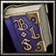

- 主要屬性 智慧
攻擊範圍 600
- 基礎護甲 2
基礎攻速 1.8
- 基礎攻擊 68 - 76
基礎跑速 300
上杉謙信之軍師宇佐美定滿為日本戰國時代武將。又被稱為駿河守。最初同父親宇佐美房忠仕奉越後守護職上杉氏一族的上條家、與越後守護代長尾為景對抗作戰、之後降服於長尾氏、為景死後繼續仕奉其子長尾景虎（上杉謙信）。曾協助景虎降服同族的上田長尾家之長尾政景而立下戰功。
-

-
W水龍攻
-
100/125/150/175
-
8/7/6/5
丟出連環水波彈跳(3/5/7/11)次，對每個目標造成(150/300/450/600)傷害。
冷卻時間隨技能等級提升降低。
-

-
E冰茅圍籬
-
100/120/140/160
-
17
在範圍內施展冰茅圍籬，呼叫冰爆造成(200/300/400/500)點傷害，並且將敵人凍僵(1.1/1.4/1.7/2.0)秒。
-

-
R越後流兵法
-
75/95/115/135
-
12/11/10/9
恢復所有友軍的(25/50/75/100)法力以及(100/130/160/190)生命值。
冷卻時間隨技能等級提升降低。
-

-
T車懸
-
300/300/300
-
125/115/105
在範圍內持續創造出(20/30/40)位騎兵精英發動奇襲，導致敵人暈頭轉向0.8秒，並且攻擊敵人，奇襲部隊具有極快的移動能力。騎兵持續12秒。
學習等級為6/12/18，
召喚的騎兵對建築攻擊類型為穿刺，冷卻時間隨技能等級提升降低。
召喚的騎兵對建築攻擊類型為穿刺，冷卻時間隨技能等級提升降低。
-

-
B屬性加乘
-
--
-
--
永久性的提升(3/6/9/12)靈活、智慧和力量。